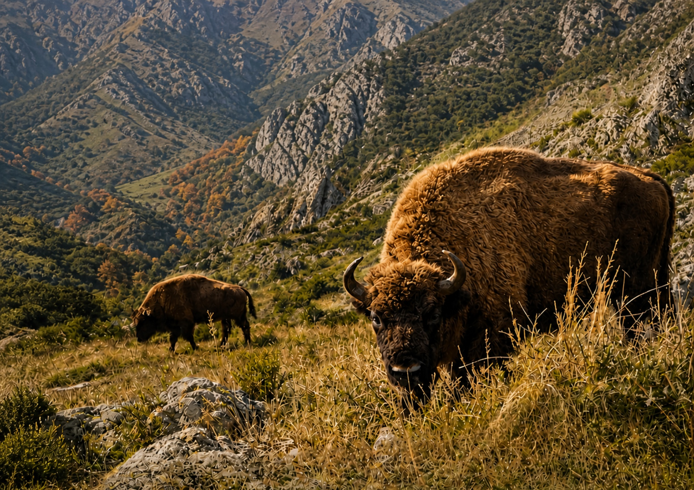

1
Boat departure
We sail across the Riaño reservoir surrounded by mountains, reaching an area that is not usually accessible.
This does not look like León. Boat access, guided hiking and bison watching in one of the wildest landscapes of the Cantabrian Mountains.

The experience
The adventure starts by sailing across the Riaño reservoir to reach a secluded valley. From there, a guided route takes you into a wild, peaceful landscape full of life.
How it works
An experience designed for travellers looking for something different in Riaño: landscape, wildlife, silence and a special way to connect with the mountains of León.
We sail across the Riaño reservoir surrounded by mountains, reaching an area that is not usually accessible.
We walk through the valley with a guide, interpreting the landscape, wildlife and natural history of the area.
We look for bison and other species living in the area. Sightings always depend on nature.
Why book
It is a real nature experience: boat access, high-mountain scenery and the chance to see bison in a landscape that surprises even those who already know Riaño.
Useful information
We recommend bringing comfortable footwear, water, sun protection and clothing suitable for the weather. The activity may be modified or postponed if conditions are not safe.

Message us on WhatsApp and we will confirm availability, times and places for the next departure.
I want to book